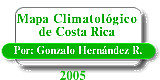

ESCUELA DE CIENCIAS GEOGRAFICAS, UNIVERSIDAD NACIONAL HEREDIA Contáctenos : geocrad@una.ac.cr
Haga click sobre el mapa en la zona de su interés para ver información climática, o busque la información climática por distrito :